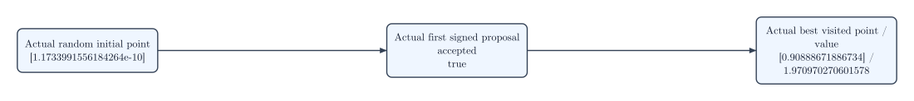
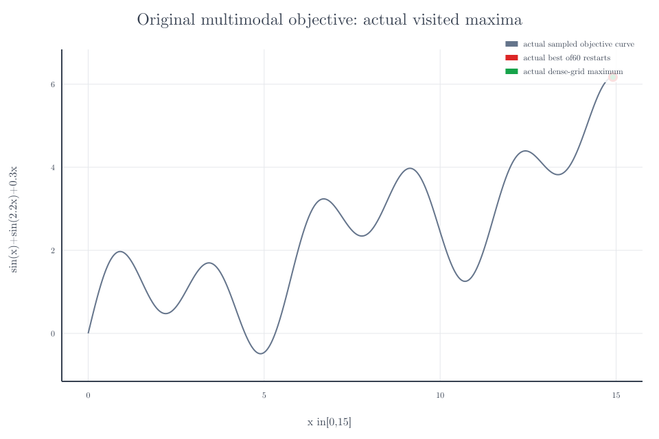
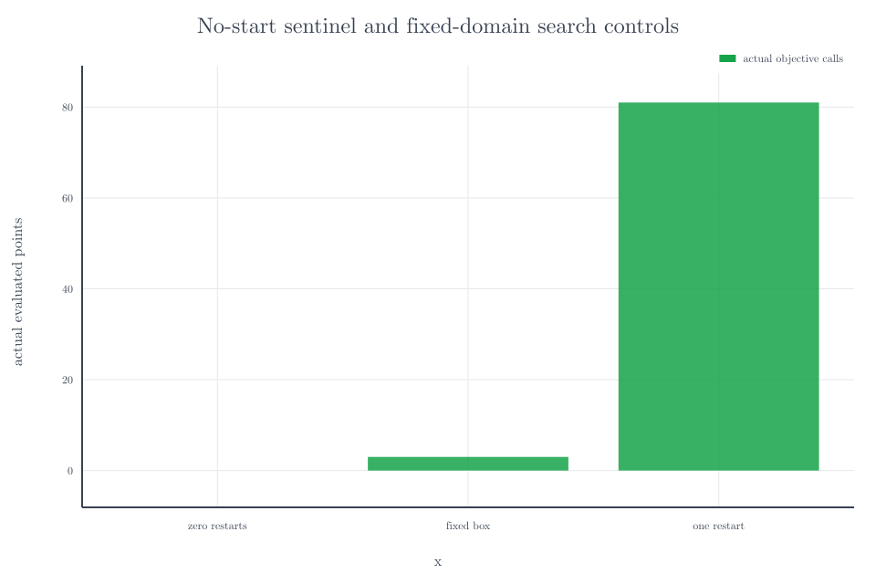
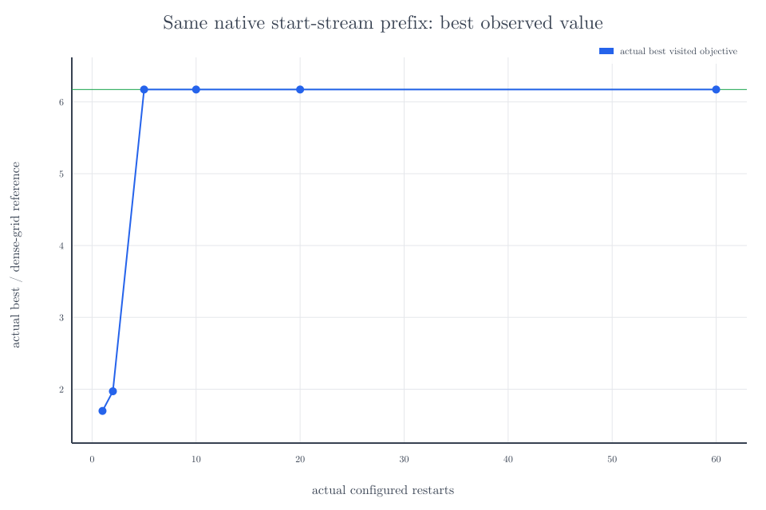

Random-restart hill climbing: actual proposals, accepted moves and grid references
Abstract
A multimodal objective can trap a local coordinate search at a poor peak. Random restarts explore additional starting basins while retaining the best actually visited objective value. The native producer now records its real starts, signed proposals, bound skips and accepted states. The original sine-mixture objective, sixty starts and seed1 remain, with a dense grid maximum labelled as a finite reference rather than an exact global certificate.
Mechanism and mathematical scope
From the current point, the producer tries each coordinate at +step then-step, immediately accepting a strictly larger finite objective. A complete sweep with no improvement halves the step. It stops a climb when step is at most the configured minimum, then keeps the best restart result.
These are native decision invariants, not a guarantee of a global maximum. An actual bounded box can exclude a signed proposal; that record has no objective evaluation. A fixed seed determines the start sequence, and callbacks can have their own cost or side effects. Evaluation/history budgets bound selected execution; positive step thresholds and no-improvement halvings are explicit. A grid search samples only its listed coordinates and can miss a peak between them.
A tiny actual producing history
The table and native concept diagram read the same producing execution. Every block below is a complete editable C++ program.
#include <dm/dm.hpp>
int main() {
namespace a = dm::algorithms;
namespace g = dm::graphics;
std::filesystem::create_directories("build");
a::HillClimbOptions o;
o.restarts = 1;
auto t = a::hill_climb_trace(a::hill_wave_objective, {0}, {2}, o);
const auto &initial = t.steps[0];
const auto &proposal = t.steps[1];
std::print("\n| selected actual record (first12 only) | initial | evaluated | accepted | before | " "attempted point | after | actual retained value |\n| ---: | --- | --- | --- | --- | --- | " "--- | ---: |\n");
for (std::size_t i = 0; i < std::min<std::size_t>(12, t.steps.size()); ++i) {
const auto &s = t.steps[i];
std::print("| {} | {} | {} | {} | `{}` | `{}` | `{}` | {} |\n", i,
s.initial, s.evaluated, s.accepted, s.before, s.candidate,
s.after, s.value_after);
}
g::Diagram d;
d.node("n0", {0, 0},
std::format("Actual random initial point\n{}", initial.after));
d.node("n1", {10, 0},
std::format("Actual first signed proposal accepted\n{}",
proposal.accepted));
d.node("n2", {20, 0},
std::format("Actual best visited point / value\n{} / {}", t.best.x,
t.best.value));
d.edge("n0", "n1").edge("n1", "n2");
d.save_svg("build/random_restart_hill_climbing_tiny.svg");
}| selected actual record (first12 only) | initial | evaluated | accepted | before | attempted point | after | actual retained value |
|---|---|---|---|---|---|---|---|
| 0 | true | true | true | [1.1733991556184264e-10] | [1.1733991556184264e-10] | [1.1733991556184264e-10] | 4.106897044664493e-10 |
| 1 | false | true | true | [1.1733991556184264e-10] | [0.20000000011733993] | [0.20000000011733993] | 0.6846087962448235 |
| 2 | false | true | false | [0.20000000011733993] | [1.1733991556184264e-10] | [0.20000000011733993] | 0.6846087962448235 |
| 3 | false | true | true | [0.20000000011733993] | [0.40000000011733994] | [0.40000000011733994] | 1.2801572215153783 |
| 4 | false | true | false | [0.40000000011733994] | [0.20000000011733993] | [0.40000000011733994] | 1.2801572215153783 |
| 5 | false | true | true | [0.40000000011733994] | [0.60000000011734] | [0.60000000011734] | 1.7133575737094136 |
| 6 | false | true | false | [0.60000000011734] | [0.40000000011734] | [0.60000000011734] | 1.7133575737094136 |
| 7 | false | true | true | [0.60000000011734] | [0.80000000011734] | [0.80000000011734] | 1.9395104081055432 |
| 8 | false | true | false | [0.80000000011734] | [0.60000000011734] | [0.80000000011734] | 1.9395104081055432 |
| 9 | false | true | true | [0.80000000011734] | [1.00000000011734] | [1.00000000011734] | 1.9499673885741673 |
| 10 | false | true | false | [1.00000000011734] | [0.80000000011734] | [1.00000000011734] | 1.9499673885741673 |
| 11 | false | true | false | [1.00000000011734] | [1.2000000001173399] | [1.00000000011734] | 1.9499673885741673 |

The retained original experiment
#include <dm/dm.hpp>
int main() {
namespace a = dm::algorithms;
namespace g = dm::graphics;
std::filesystem::create_directories("build");
a::HillClimbOptions o;
o.restarts = 60;
o.seed = 1;
auto run = a::hill_climb_run(a::hill_wave_objective, {0}, {15}, o);
auto reference =
a::hill_objective_grid(a::hill_wave_objective, 0, 15, .0005);
auto curve = a::hill_objective_grid(a::hill_wave_objective, 0, 15, .02);
std::print("\n| retained original experiment | actual x | actual objective |\n| --- | ---: | ---: |\n| " "best of60 native restarts | {} | {} |\n| dense finite grid maximum | {} | {} |\n",
run.best.x[0], run.best.value, reference.maximum.x[0],
reference.maximum.value);
std::print("Actual evaluations {}, proposals {}, accepted moves {}, step shrinks {}. Grid visits {}.\n",
run.evaluations, run.proposals, run.accepted, run.shrinks,
reference.x.size());
auto p = g::RPlot::create();
p.lines(curve.x, curve.values, "actual sampled objective curve",
{100, 116, 139}).points({run.best.x[0]}, {run.best.value},
"actual best of60 restarts", {220, 38, 38},
7).points({reference.maximum.x[0]},
{reference.maximum.value},
"actual dense-grid maximum",
{22, 163, 74}, 4).title(
"Original multimodal objective: actual visited maxima").x_label(
"x in[0,15]").y_label("sin(x)+sin(2.2x)+0.3x");
p.save_svg("build/random_restart_hill_climbing_original.svg");
}| retained original experiment | actual x | actual objective |
|---|---|---|
| best of60 native restarts | 14.911080834921885 | 6.171925988041954 |
| dense finite grid maximum | 14.911000000006732 | 6.17192597015839 |
Actual evaluations 5445, proposals 5470, accepted moves 875, step shrinks 1860. Grid visits 30000.

Explicit controls
#include <dm/dm.hpp>
int main() {
namespace a = dm::algorithms;
namespace g = dm::graphics;
std::filesystem::create_directories("build");
std::vector<std::string> labels{"zero restarts", "fixed box", "one restart"};
std::vector<double> counts;
std::print("\n| actual control | found | actual objective evaluations | actual proposals |\n| --- | --- " "| ---: | ---: |\n");
for (int i = 0; i < 3; ++i) {
a::HillClimbOptions o;
o.restarts = i == 0 ? 0 : i == 1 ? 3 : 1;
auto r =
a::hill_climb_run(a::hill_wave_objective,
i == 1 ? std::vector<double>{2}
: std::vector<double>{0},
i == 1 ? std::vector<double>{2}
: std::vector<double>{2}, o);
counts.push_back(r.evaluations);
std::print("| {} | {} | {} | {} |\n", labels[i], r.found, r.evaluations,
r.proposals);
}
bool bounds = false, value = false;
try {
a::hill_climb_run(a::hill_wave_objective, {2}, {1});
} catch (const std::invalid_argument &) {
bounds = true;
}
try {
a::hill_climb_run([](const auto &) {
return std::numeric_limits<double>::quiet_NaN();
}, {0}, {1});
} catch (const std::overflow_error &) {
value = true;
}
std::print("Reversed bounds rejected: {}; nonfinite callback rejected: {}.\n",
bounds, value);
auto p = g::RPlot::barplot(counts, labels, "actual objective calls");
p.title("No-start sentinel and fixed-domain search controls").y_label(
"actual evaluated points");
p.save_svg("build/random_restart_hill_climbing_controls.svg");
}| actual control | found | actual objective evaluations | actual proposals |
|---|---|---|---|
| zero restarts | false | 0 | 0 |
| fixed box | true | 3 | 0 |
| one restart | true | 81 | 80 |
Reversed bounds rejected: true; nonfinite callback rejected: true.

Actual selected work and sensitivity
#include <dm/dm.hpp>
int main() {
namespace a = dm::algorithms;
namespace g = dm::graphics;
std::filesystem::create_directories("build");
std::vector<double> x, y;
std::print("\n| same-seed restart prefix | actual best objective | actual objective calls | actual " "accepted proposals |\n| ---: | ---: | ---: | ---: |\n");
for (std::size_t starts : {1, 2, 5, 10, 20, 60}) {
a::HillClimbOptions o;
o.restarts = starts;
auto r = a::hill_climb_run(a::hill_wave_objective, {0}, {15}, o);
x.push_back(starts);
y.push_back(r.best.value);
std::print("| {} | {} | {} | {} |\n", starts, r.best.value,
r.evaluations, r.accepted);
}
const auto grid =
a::hill_objective_grid(a::hill_wave_objective, 0, 15, .0005);
auto p = g::RPlot::create();
p.lines(x, y, "actual best visited objective", {37, 99, 235}).points(
x, y, {37, 99, 235}, 5).abline_h(grid.maximum.value, {22, 163, 74}).title("Same native start-stream prefix: best observed value").x_label("actual configured restarts").y_label("actual best / dense-grid reference");
p.save_svg("build/random_restart_hill_climbing_work.svg");
}| same-seed restart prefix | actual best objective | actual objective calls | actual accepted proposals |
|---|---|---|---|
| 1 | 1.6975294043890616 | 99 | 18 |
| 2 | 1.9709702706015775 | 187 | 31 |
| 5 | 6.171925988041954 | 465 | 78 |
| 10 | 6.171925988041954 | 906 | 146 |
| 20 | 6.171925988041954 | 1822 | 292 |
| 60 | 6.171925988041954 | 5445 | 875 |

API and interpretation
The original dense scan was called a global optimum, although it evaluates only a finite grid. It is now labelled accordingly, and the native curve/scan helpers preserve its repeated-addition sampling order. Search can exceed a grid maximum between grid coordinates without contradicting either result. The first tiny table is explicitly a prefix of actual records, not reruns with different budgets. The legacy callable template still supports by-value move-only callables through a borrowed synchronous adapter. Callback effects and exceptions propagate; no rollback or global-optimality guarantee is supplied.
Reusable producers, fixtures and histories live in the canonical C++ library. Captured records own their values and do not come from a separate report replay. Selected counters and record/scalar policies are specified at their API boundaries; they are not peak-byte or wall-time budgets. Synthetic structural inputs are controlled fixtures for these mechanisms.
References
Verification: 214 scoped native cases;15 directly instrumented ASan/UBSan
cases;127 executable public examples;567/567 full-file definitions;10
hovers;1340 independent records/58514 checks;frozen compatibility across six
changed legacy families;independent NumPy tensor-training comparisons with
recorded tolerances;12 checkout/installed standalone headers and linked
consumer;41 executed programs and41 inspected figures with both exports.
Receipts: build/mepml-conversion/batch-314-323/.